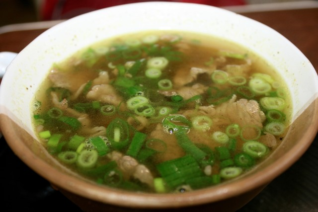
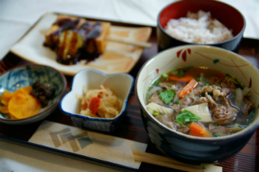
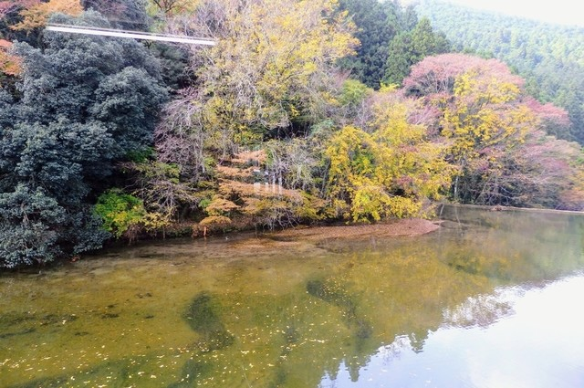
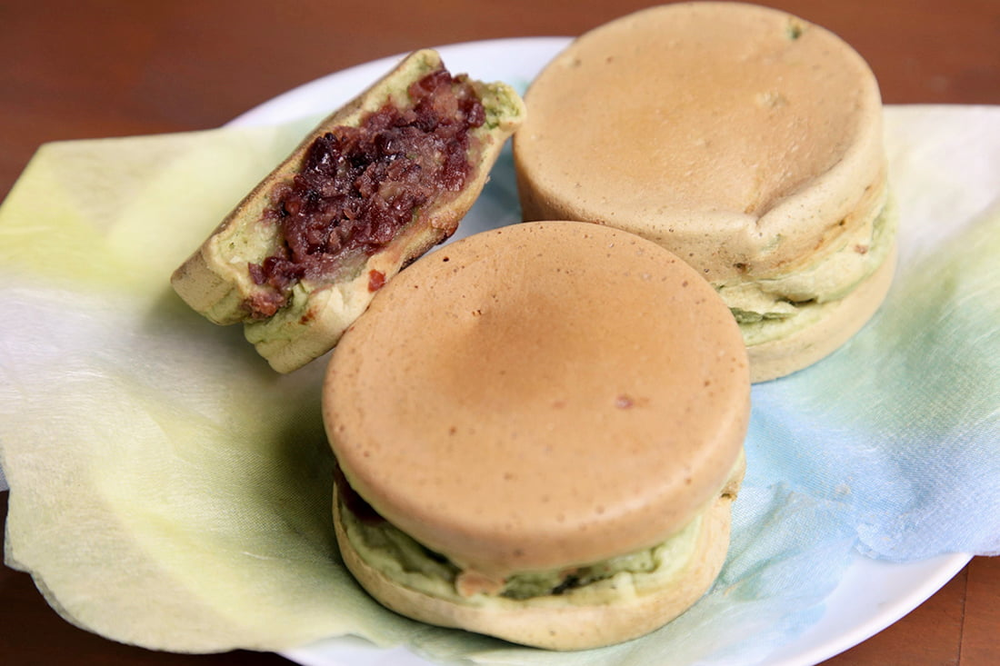
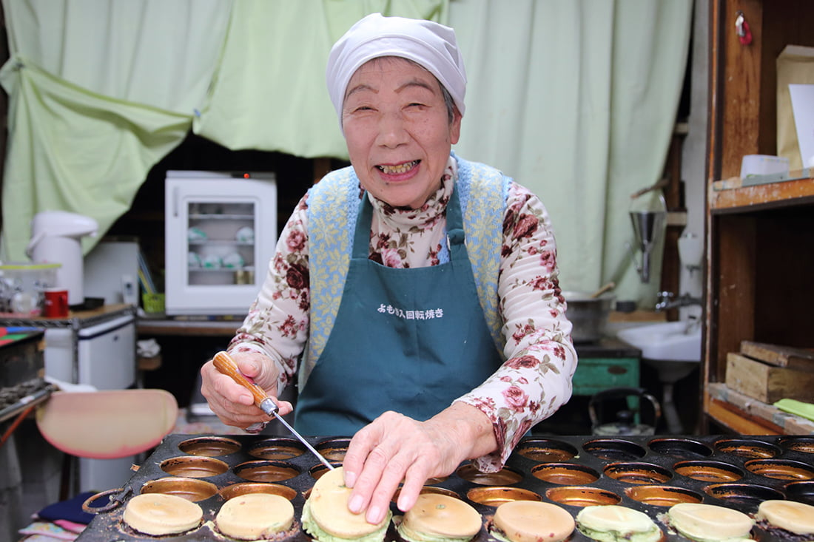
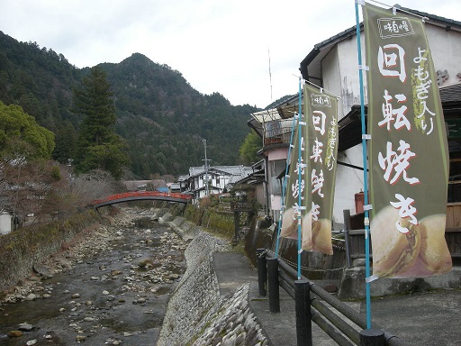

名張グルメ
見晴亭



伊賀牛の入った名張市のB級グルメ牛汁を滝川の支流を眺めながら食すことができる。
伊賀牛は、地元での消費が主であるが、融点が低く口の中で溶ける脂身。
そして赤身の美味さは、有名ブランド牛にも劣らない物である。
住所〒5180469
三重県名張市赤目町長坂671-2
TEL0595-63-2989
詳細情報
栄吉



室生寺門前で50年前から回転焼きを作っているお店。よもぎ入り回転焼きは、よもぎを生地に練りこんで、
たっぷりのあんこと共に今川焼風に焼いたもので、風味高く、上品な味がする。
おそらくここでしか食べれなく、1個100円と安く、非常においしいので、おすすめ。
因みに室生寺の駐車場は600円で、栄吉の駐車場は無料なので、室生寺参拝の際はここに駐車して
浮いたお金でよもぎ入り回転焼きを買うのが賢い。
住所〒633-0421
奈良県宇陀市室生709-2
TEL0745-93-2024
詳細情報
ページトップへ戻る